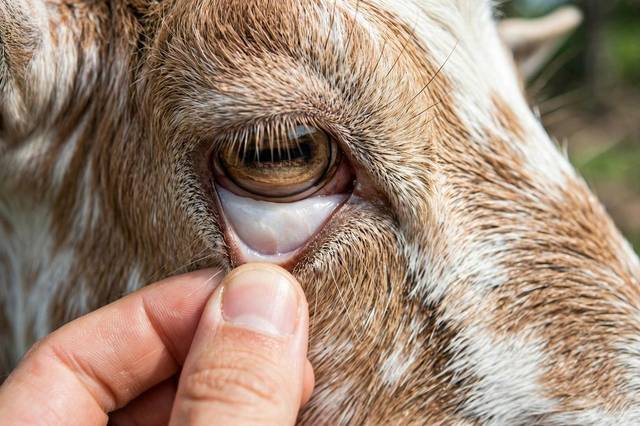
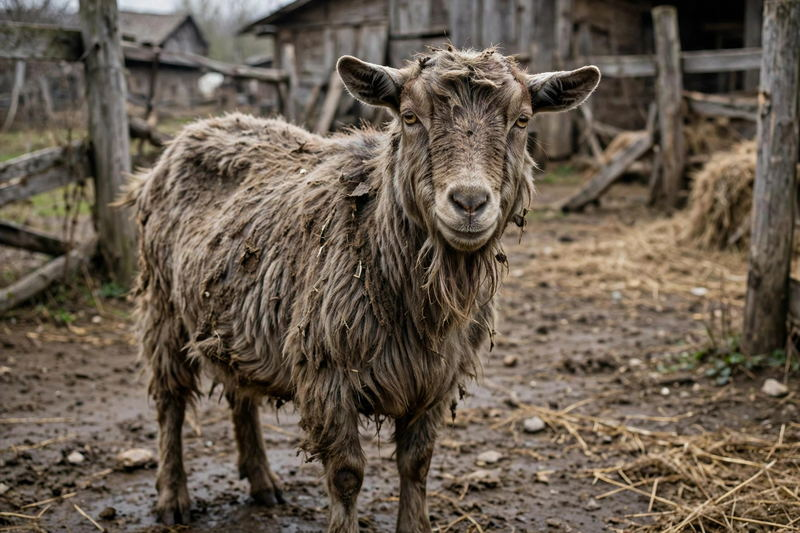
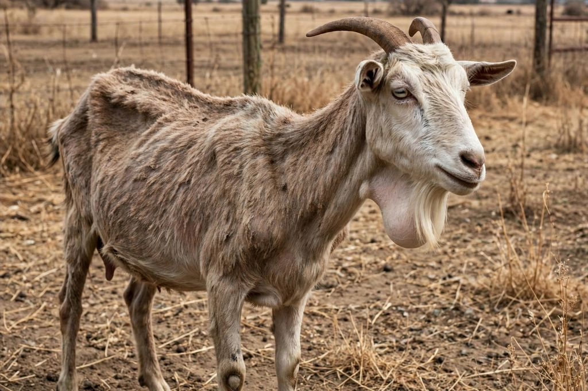

Haemonchosis is caused by the barber’s pole worm, Haemonchus contortus — a blood-sucking roundworm that lives in the stomach (abomasum) of goats and sheep. It is the most important internal parasite of goats in warm climates, and heavy infections cause severe anaemia and death.
In Pakistan, haemonchosis (پیٹ کے کیڑے) is very common, especially during and after the rainy season when worm larvae thrive on pasture. It occurs worldwide in tropical and subtropical regions, and drug resistance in this worm is a growing problem.
On this page: the cause, animals affected, clinical signs, diagnosis, treatment principles and prevention.
Cause
Goats become infected by swallowing infective larvae while grazing. The larvae develop into adult worms in the abomasum, where each worm sucks blood. Warm, moist conditions favour the survival of larvae on pasture, so the risk is highest in the rainy season and on overstocked, short-grazed pasture.
Animals Affected
Goats and sheep are the main hosts. Goats are more susceptible than sheep. Young animals, lactating does and animals in poor condition are most severely affected.
Clinical Signs
1
Pale gums and pale inner eyelids (anaemia)(Pale membranes from blood loss)
2
Swelling under the jaw, known as bottle jaw(Soft swelling under the jaw)
3
Weakness(Weak and unsteady)
4
Dullness(Standing dull and quiet)
5
Reluctance to move(Unwilling to walk)
6
Weight loss(Losing body condition)
7
Reduced milk production(Drop in milk production)
8
Rough, dull coat(Staring, unhealthy coat)
9
Sudden death in heavy infections(Fatal in heavy worm burdens)

Pale eyelids (anaemia)Bottle jawWeaknessDullnessReluctance to moveWeight lossReduced milk production

Rough, dull coat

Sudden death
Diagnosis
Clinical signs and a pale eye membrane (FAMACHA score) raise suspicion. Faecal egg counts confirm the worm burden, and a blood test (PCV) measures the anaemia. Regular faecal egg counts help a veterinarian judge when treatment is needed.
Treatment
Treatment is with an anthelmintic (dewormer) prescribed by a veterinarian. Because resistance to dewormers is common, the veterinarian may advise treating only the animals that need it (targeted selective treatment, guided by FAMACHA scoring and faecal egg counts) rather than the whole flock. Severely anaemic animals also need good nutrition and supportive care.
Recommended Medicines
1
Anthelmintic – Closantel(Effective against Haemonchus (barber's pole worm))10 mg/kg PO (goats)
Anthelmintic – Albendazole(Broad-spectrum dewormer)10 mg/kg PO (goats)
4
Anthelmintic – Levamisole(Broad-spectrum dewormer)8 mg/kg PO (goats)
5
Supportive care – Multivitamins(To support recovery in severely anaemic animals)10 ml IM daily
⚠ Important Tips:
Dose dewormers accurately by weight — under-dosing builds drug resistance.
Treat only the animals that need it, guided by FAMACHA scoring and faecal egg counts.
Use dewormers only under veterinary advice.
Rotate pastures and keep feed and water off the ground.
Where several dewormers are listed, the veterinarian chooses ONE — never use them all together.
Oral medicine / drench — dose as the vet advisesInjection — vet-administered only
Prevention
Rotate pastures and avoid grazing animals on very short grass
Keep feed and water off the ground
Quarantine and deworm new animals before mixing
Use faecal egg counts to monitor the flock
Do not deworm on a fixed calendar without veterinary advice — unnecessary treatment speeds up drug resistance
Maintain good nutrition, which helps animals resist worms
Key Takeaway
Haemonchosis is controlled by pasture management and targeted treatment — not by deworming the whole flock on a schedule. Test, treat the animals that need it, and protect the drugs that still work.
Keep herd health records, consult a qualified veterinarian and follow the animal-health authority's current guidance for your region.
Frequently Asked Questions
What are the symptoms of haemonchosis in goats?
Pale gums and pale inner eyelids (anaemia), swelling under the jaw (bottle jaw), weakness, weight loss and reduced milk production. Note that diarrhoea is not typical of haemonchosis, so its absence does not rule the disease out.
What causes haemonchosis in goats?
Haemonchosis is caused by Haemonchus contortus, the barber's pole worm, a blood-sucking roundworm that lives in the abomasum. Goats become infected by swallowing infective larvae while grazing, and warm, moist conditions favour the larvae on pasture.
How is haemonchosis in goats diagnosed?
Clinical signs and a pale eye membrane (FAMACHA score) raise suspicion. Faecal egg counts confirm the worm burden, and a blood test (PCV) measures the anaemia.
How is haemonchosis in goats treated?
Treatment is with an anthelmintic (dewormer) prescribed by a veterinarian. Because resistance to dewormers is common, the veterinarian may advise treating only the animals that need it, guided by FAMACHA scoring and faecal egg counts. Severely anaemic animals also need good nutrition and supportive care.
How can haemonchosis in goats be prevented?
Rotate pastures, avoid grazing animals on very short grass, keep feed and water off the ground, and quarantine and deworm new animals. Do not deworm on a fixed calendar without veterinary advice, as unnecessary treatment speeds up drug resistance.
How to deworm goats?
Treatment is with an anthelmintic (dewormer) prescribed by a veterinarian. Because resistance is common, the veterinarian may advise treating only the animals that need it, guided by FAMACHA scoring and faecal egg counts.
Why is my goat pale and weak?
Pale gums and pale inner eyelids with weakness and weight loss are typical of haemonchosis, caused by the blood-sucking barber's pole worm. A veterinarian should confirm the worm burden with faecal egg counts.
بکری میں پیٹ کے کیڑوں کی علامات کیا ہیں؟
پیلے مسوڑھے، جبڑے کے نیچے سوجن، کمزوری، وزن میں کمی اور دودھ میں کمی پیٹ کے کیڑوں کی علامات ہیں۔ دلچسپ بات یہ ہے کہ اس بیماری میں دست عام نہیں ہوتا۔ علاج کے لیے ویٹرنری ڈاکٹر سے مشورہ کریں۔